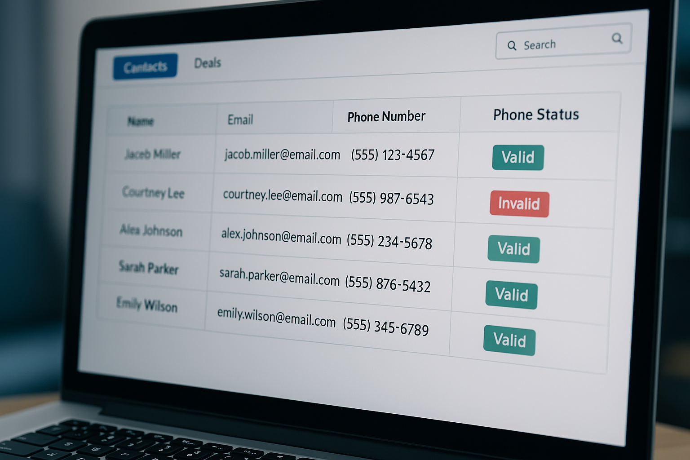
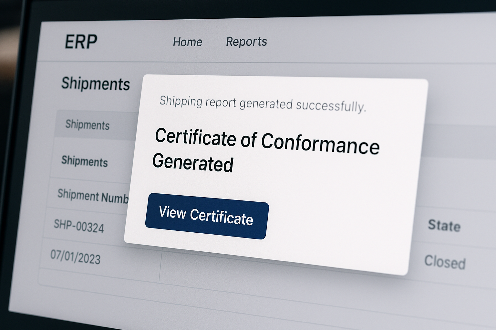
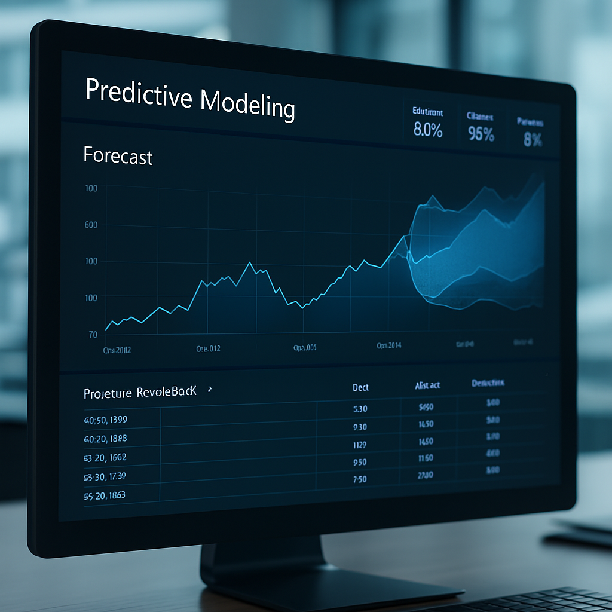
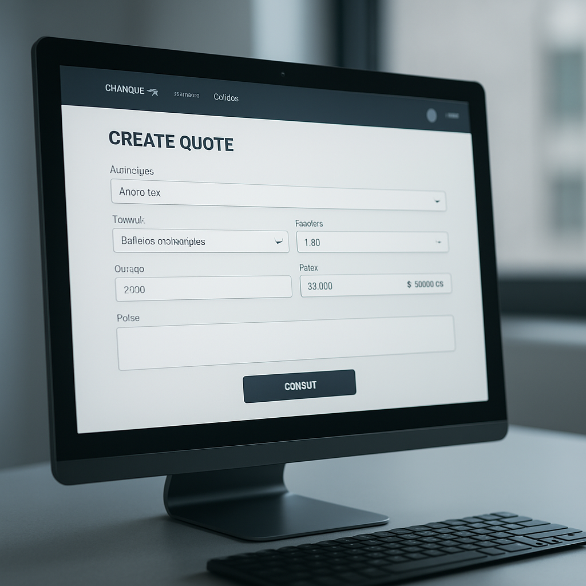
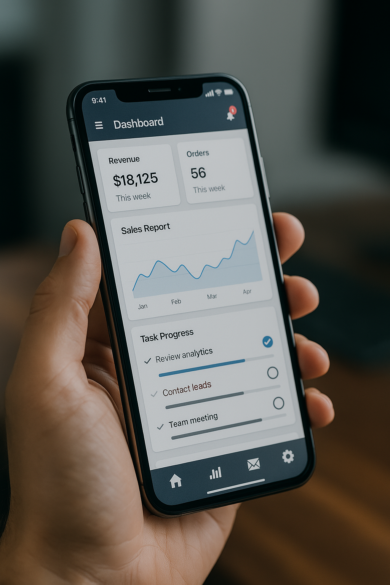
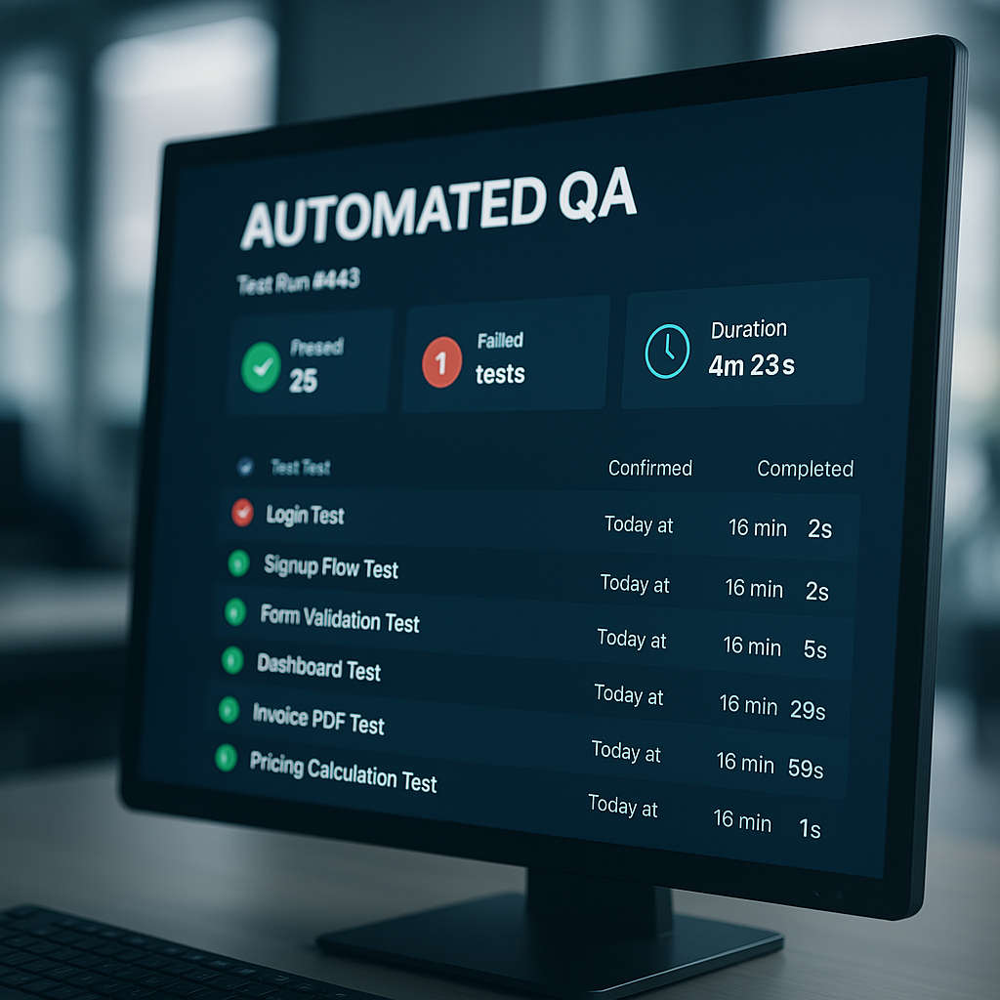
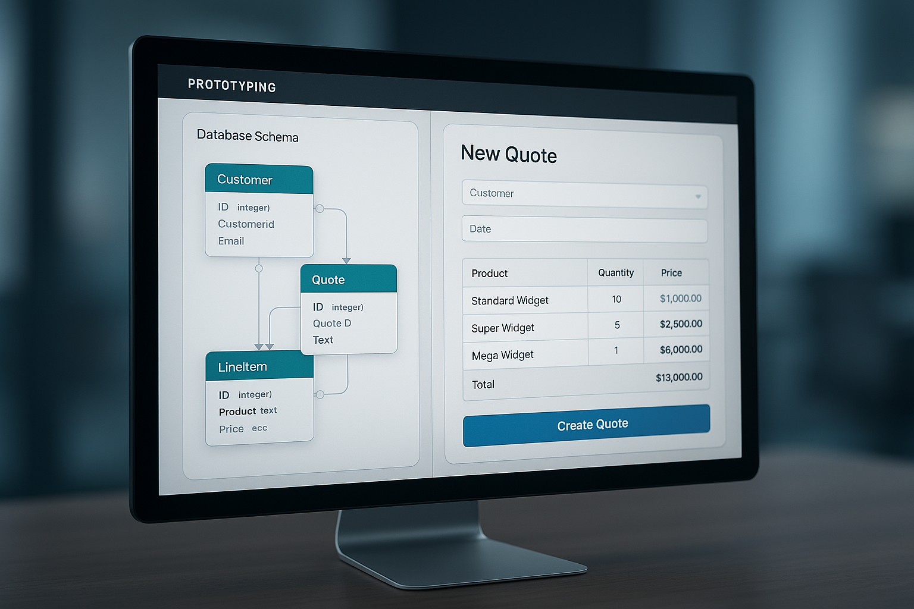

CRM Automations
Typical Use Cases
- Automated report generation
- Realtime notifications
- Third party data integrations
Benefits
- Increase sales conversion
- Save time on repetitive tasks
- Improve accuracy and consistency
- Increase team capacity
- Enable faster decision-making
Real Examples
- Notify sales managers in Slack when a high-value deal hasn’t been updated in 5 days in Salesforce
- Add demographic and phone connectivity status to leads from third party data providers

ERP Automations
Typical Use Cases
- Automated report generation
- Realtime notifications
- Data Validation
Benefits
- Reduce costs
- Save time on repetitive tasks
- Improve accuracy and consistency
- Increase team capacity
- Enable faster decision-making
Real Examples
- Generate certificates of conformance & shipping labels when a product is marked for shipping
- Flag mismatches between purchase orders, goods receipts and invoices
AI-Powered Virtual Assistants
Typical Use Cases
- Handle customer service questions and lead qualification
- Book meetings and send follow-ups automatically
- Internal bots that surface SOPs, policies, and key data on demand
Key Benefits
- 24/7 instant responses
- Boost team efficiency with fast info retrieval
- Reduce manual back-and-forth
- Shorten decision and action time
Real Examples
- AI chatbot qualifies leads and books meetings directly on your site
- Internal Slack bot surfaces SOPs and step-by-step processes on request
- Auto-replies to common client questions pulled from your knowledge base
Automated Reporting
Typical Use Cases
- Send daily/weekly reports automatically
- Generate PDFs from live dashboards
- Distribute data summaries to teams or clients
Key Benefits
- Save hours on manual reporting
- Ensure consistent, on-time delivery
- Keep teams aligned with real-time data
- Minimize spreadsheet chaos
Real Examples
- Email daily operations summaries to leadership at 7 AM
- Auto-generate investor reports every month from BI tools
- Slack alerts with team KPIs pulled from multiple data sources
Automated Workflows
Typical Use Cases
- Sync and validate data across systems
- Ingest data from emails, forms, or web sources
- Trigger real-time alerts on key events or errors
- Route and escalate tasks based on rules like priority or owner
Key Benefits
- Boost speed and accuracy of internal processes
- Free up staff for higher-value tasks
- Identify issues early with automatic notifications
- Improve SLA compliance and team accountability
- Maintain seamless data flow between apps and systems
Real Examples
- Auto-fill invoice details into finance systems from PDF attachments
- Pull pricing and availability from supplier APIs into your tools
- Send Slack alerts when a form submission fails validation

Machine Learning
Typical Use Cases
- Sales and demand forecasting
- Fraud detection and anomaly alerts
- Customer churn prediction
- Automated lead scoring
- Smart document classification
Key Benefits
- Make better decisions with predictive insights
- Catch costly issues before they happen
- Prioritize efforts with intelligent scoring
- Scale analysis without hiring data scientists
Real Examples
- Forecast next quarter’s sales using historical trends
- Detect suspicious behavior in customer payments
- Score leads by likelihood to convert and auto-prioritize
- Auto-sort support inquiries by priority

Web Applications
Typical Use Cases
- Build internal quoting systems tailored to your workflow
- Create dashboards for task tracking and approvals
- Automate customer-facing calculators or tools
Key Benefits
- Streamline manual processes
- Replace spreadsheets with structured apps
- Improve data consistency and access
- Tailored UX that fits your exact needs
Real Examples
- Custom quote builder for sales teams to generate pricing live
- Internal web app for managing work orders and approvals
- Automated tool for contractors to estimate job timelines and costs

Mobile Applications
Typical Use Cases
- Give field teams access to tools on the go
- Enable customer self-service via branded mobile apps
- Send push notifications for real-time updates
Key Benefits
- Work from anywhere, without sacrificing functionality
- Increase customer engagement and satisfaction
- Improve team responsiveness and mobility
- Extend your internal systems to mobile platforms
Real Examples
- Sales app to generate quotes and check inventory on-site
- Mobile tool for field techs to submit reports and photos
- Customer-facing app to track orders and submit support tickets

Automated Quality Assurance
Typical Use Cases
- Catch bugs before users do with scheduled test runs
- Run test suites after every deployment or code change
- Validate form inputs, flows, and API integrations
Key Benefits
- Increase confidence in every release
- Reduce manual testing hours
- Catch regressions early
- Ensure consistency across browsers and devices
Real Examples
- Automated login and signup flow testing on every deployment
- End-to-end tests for quoting workflows, form submissions, and dashboards
- Real-time alerts for failed tests or UI regressions

Prototyping
Typical Use Cases
- Build MVPs to test core functionality
- Design and validate database architectures
- Rapidly iterate UI/UX with real user feedback
Key Benefits
- Reduce risk before major investment
- Secure stakeholder buy-in with interactive demos
- Move from idea to execution fast
- Prove value to investors, customers, or leadership
Real Examples
- Mockup of custom quoting platform with working data storage
- MVP for a scheduling app tested with real users
- Prototype of internal tool used to secure development funding
Consulting & Strategy
Typical Use Cases
- Evaluate existing tech stack and architecture
- Audit workflows for inefficiencies and bottlenecks
- Identify opportunities for automation and tooling
- Develop scalable strategies for digital transformation
Key Benefits
- Uncover hidden inefficiencies in current systems
- Make confident decisions with expert insights
- Prioritize high-ROI improvements and automations
- Lay the foundation for sustainable growth
Real Examples
- Conduct tech stack audit to eliminate unused tools
- Identify manual tasks ready for automation in CRM workflows
- Help teams modernize from spreadsheets to custom internal tools